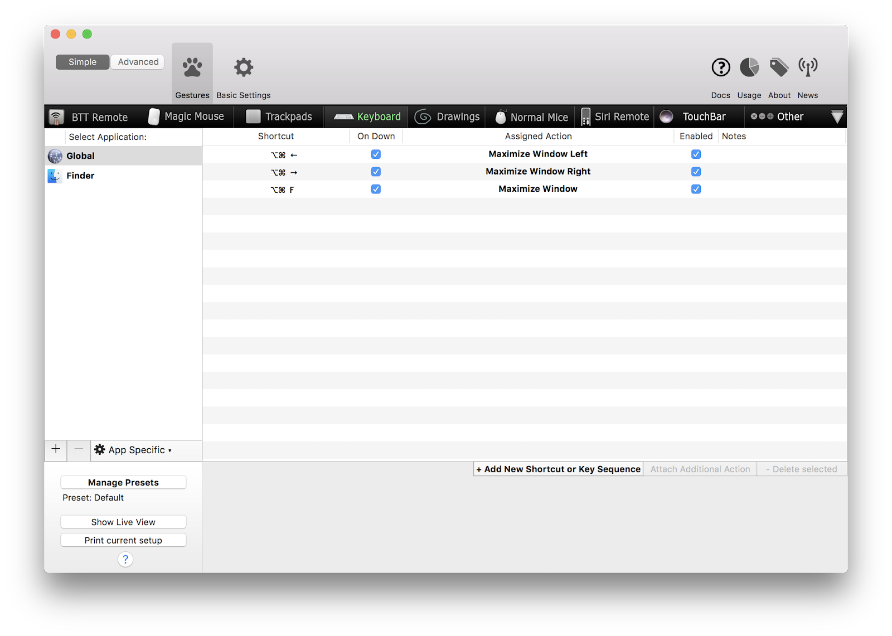
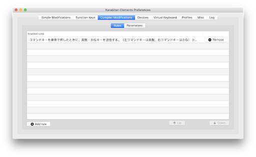
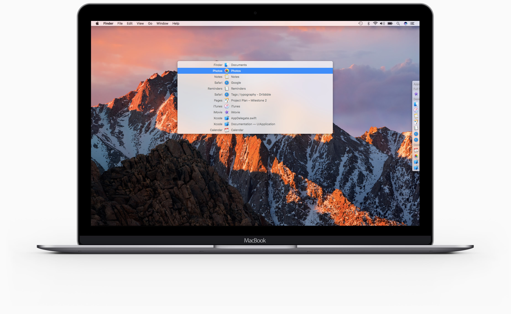
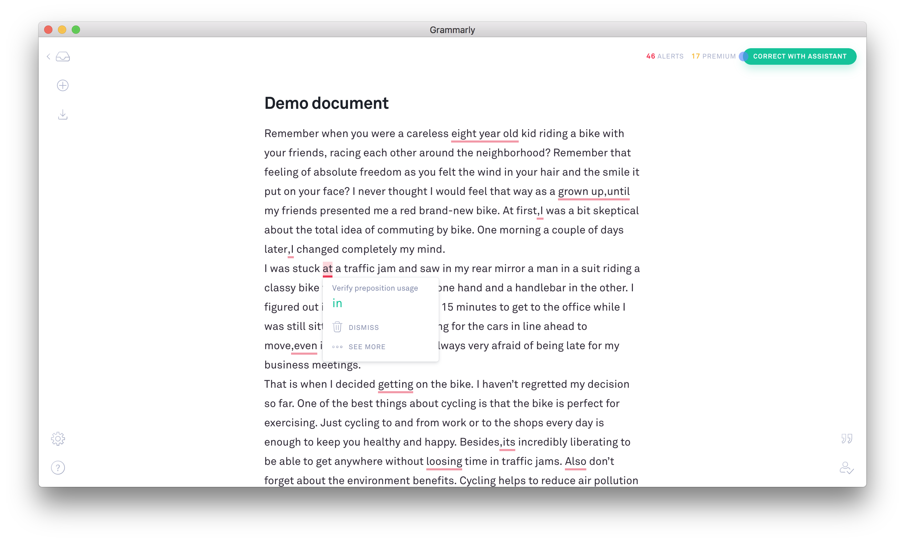
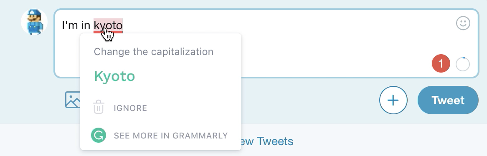
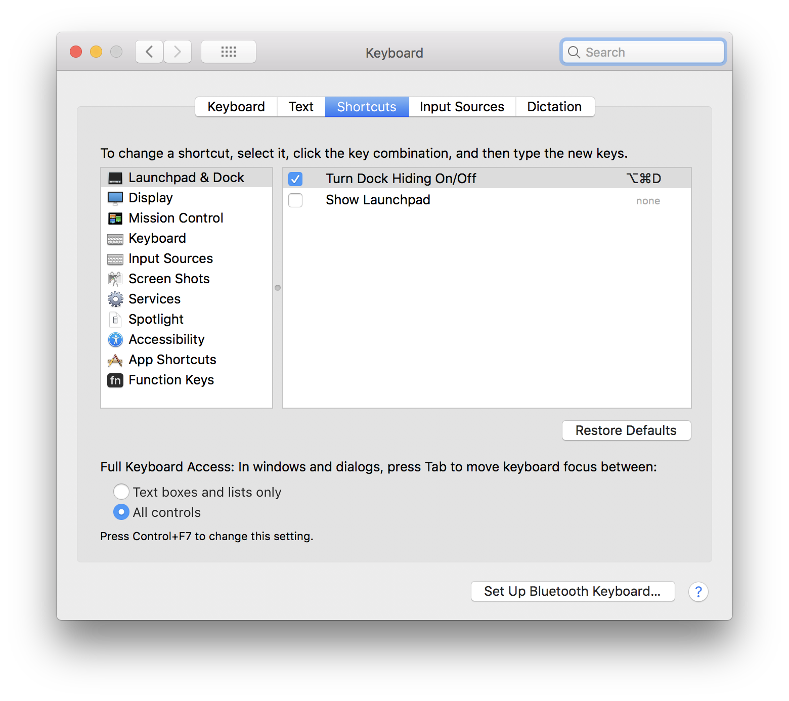

君たちが考えた最強の環境について知りたい ＃0 を開催した
先日，フロントエンドチームのメンバーと「君たちが考えた最強の環境について知りたい ＃0」を開催した．
ここ５年くらい，ほぼ同じ環境設定やツールで開発している．ペアプログラミングやライブコーディングをやると，”今の操作なにやったの？” 的な感じで新しい発見がよくあるのだが，最近はそういう機会もなかったので，皆の時間を借りてその機会を設けた．時間は３０分．
*まず，自分が出したやつ 👉 *
1Password
- 有料 サブスクリプション
言わずとしれたパスワード管理アプリ．ブラウザの Extension もあり，あらゆる環境で使える．1Password 7 からパスワードの保存先が 1Password サーバにしか保存できなくなっているらしい（以前は逆に Dropbox とか自前の環境に保存する方式だった）．
iOS12 から 1Password が OS とシームレスに連携できるようになった．Settings > Face ID & Passcode > Other Apps で設定できる．さらに 1Password 上で 2FA 設定しておくと，スマホ開いて Authenticator アプリ立ち上げて，といった手順が一切不要になる．
実際の動作はこんな感じでとてもスムーズ．
Better Touch Tools
- 有料 買い切り
- トラックパッドのジェスチャーやキーバインドにOSのアクションを割り当てできる
自分は window の最大化や左右幅寄せにだけ使ってる

Karabiner Elements
https://github.com/tekezo/Karabiner-Elements
- 日本人がつくっている OSS
- 無料
- Sierra で使えなくなってたが，HighSierra では使える
- Sierra では代わりにこれ使っていたが，時々動かなくなって再起動することがよくあった
- https://ei-kana.appspot.com/
p- US キーボードでキーボード切り替えるのに使っている
- 左の Command で “英”，右で “かな” に切り替わるようにしている

Quiver
- 有料 買い切り
- エンジニア向けのメモアプリ
- β版のころから使っている
- 保存先を Dropbox とかに設定することで
- iOS版アプリもある
一つのノートの中に複数のタイプのコンテンツを書ける．Text/Code/Markdown/LaTex．ソースコードとそれに関するメモをまとめるのによく使っている．Code は言語を指定でき， syntax highlight もされる．
OS セットアップ時にやっていること
https://blog.tanaka.world/clean-install-macos-high-sierra/
以前，High Sierra にアップデートしたときにやったメモ．Caps Lock を Ctrl にリマップしたりしている．
*ここからは同僚から教えてもらったやつ 👉 *
ghq / peco
ghq は Git リポジトリの管理ツールで，clone したリポジトリへのアクセスがカンタンになる．
これに CLI のインクリメンタルサーチができる peco を組み合わせると，CLI からリポジトリ検索＋遷移がスムーズ．
1 | $ brew install ghq peco |
1 | alias repos='ghq list -p | peco' |
これらの組み合わせは結構使っている人多かった．自分はよく使うリポジトリへのパス+cdを alias に設定したりしていたので，ghq/peco でそれは不要になる．
contexts
- アプリ切り替えが楽になる
- 有料買い切り
Mac でアプリを切り替えるときに ⌘ + Tab はよく使うが，これはアプリの種類ごとにしか切り替えができない．例えば Chrome で複数 window を開いているときに，どっちの window をアクティブにするかを指定できるようになる．アプリを入れると ↓ このような表示になる．文字入力で項目の Filter ができる．

toggl
- タイムトラッカー Web アプリ
- タスクとその開始を登録すると，一日の中でどういう時間の使い方をしているか可視化できるサービス
divvy
- アプリの window を画面のどこで表示するか，かつどの大きさで表示するかを設定できる
- フルスクリーン表示しない方で，window を並べて表示するのに適してそう
Alfred
- これも言わずとしれたやつ
- ファイルやアプリの検索に加え，様々な機能と連携する入り口になる
以前は使っていたが，自分はワークフローとかと組み合わせていなかったので，最近は Spotlight だけで事足りていた．
Dash
- 開発ドキュメントの検索をラップするアプリ
API ドキュメントをググるのを手元でサクッと調べられる．ドキュメントをローカルにキャッシュしてオフラインで検索も可能．Alfred から検索できるように設定するとスムーズでとてもよさそうだった．Alfred また入れようかという気持ちになった．
Bit Bar
https://github.com/matryer/bitbar
- Mac のメニューバーに標準出力の結果を表示できる
whimsical
- フローチャートやワイヤーフレームをリアルタイム同時編集できるサービス
- デザインがシンプルでカッコいい
- 触った感じ Cacoo とかより使いやすかった
- プロトタイピングにも使えそう
grammarly
- 文法間違いを知らせてくれるエディタ
- 単語の typo だけでなく “a” “the” とか冠詞の間違いも指摘してくれる
- Chrome Extension もありブラウザでの入力もチェックしてくれる


BEAR
- Markdown エディタ
- 有料
- iOS アプリもあり同期可能
OS のダイアログボタンを タブで選択できるようになる

まとめ
事前にやりたいという話を持ちかけたところ，これいいよね？使ってる？という話で盛り上がった．誰しも “オレのオススメ” はあるし，そういう話は楽しい．今回は３０分に制限したが，合宿とかでもよいので，お酒飲みながらとかゆるくやっても楽しそう．またやりたい．
有料なツールは手を出しづらいと思う人も多いが，それに見合うだけの価値はある．個人的には 1Password を使う以前は全部同じ PW にしたり，3つくらいの難しい PW を使いまわす，などの煩雑さが完全になくなった．
自分の当たり前は，他人の当たり前ではない．大したことないなぁと思っていることも知らない人からしたら革新的になりうる．身近にいる人のナリッジを知る機会は積極的に設けていきたい．